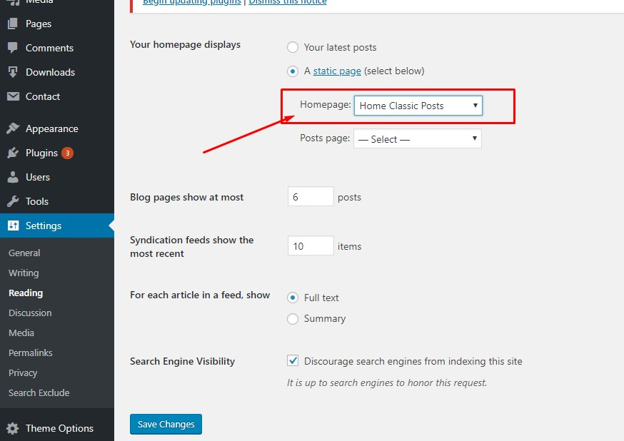
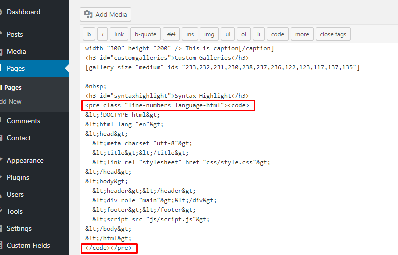

1. Introduction
Thank you! for buying one of our template, if you find any kind of issue or bug don't hesitate on contact us.
We will resolve your problem as soon as possible.
Template information:
- Name: Breek
- Author: EstudioPatagon
- Platform: Wordpress
- Latest Update: 16 September 2020 - version 3.5.7
Features
- Super Light and Modern design.
- Constantly updated.
- Translation ready (English and Spanish included).
- Minified and Optimized code.
- ACF Pro bundled (save $29).
- Built with SCSS and pre-compiled with Prepos 6 (Windows and Mac compatible).
- Dedicated advertising section (below header, before and after post content, custom advertise to place anywhere).
- Advertising section between grid posts. demo here
- Supports menu with icons
- Sticky sidebar for Posts
- Lazy Load for Lists (home pages, archives, categories, etc).
- Lazy Load for post content.
- Lazy Load for embed (iframes like Youtube/Vimeo/Soundcloud).
- HTML5 & CSS3 ready.
- 3 Single post dispositions
- No Sidebar Style for Post and Pages see here.
- Custom Tag page, see here.
- Custom Author page, see here.
- Custom 404 Page see here.
- About me Widget.
- Search Widget.
- Custom Galleries.
- Advertising sections.
- Disqus Support.
- Fully responsive.
- Video Support (Vimeo, Youtube, etc).
- Retina Display Ready.
- Font Awesome icons.
- Works on Android, Ipad and Iphone.
- Documentation included.
- Clean Design.
- Well Coded.
- Navigation Menu.
Requirements
Breek is a WordPress theme so the basic requirements are the same of Wordpress
2. Theme Setup
2.1. Install the theme
This guide assumes that you already have a Wordpress installation ready.
Uploading the theme into wp-admin
- Login on your admin panel.
- Go to Appearance -> Install Themes
- Upload -> and "Select file" which will open the File Upload dialog window.
- Browse to the folder where you have wp-breek.zip and upload it.
- Now you can activate the theme.
Uploading the theme on custom hosting (FTP)
The instructions are pretty simple:
- Connect to your FTP using a FTP software, example Filezilla.
- Unzip the wp-breek.zip file on your computer.
- Upload the extracted breek theme folder into wp-content / themes in your wordpress installation.
- Login on your wordpress admin panel.
- Go to Appearance and activate breek.
2.2. Installing required features (step by step)
1.- After you activated successfully the template, you will be redirect to the Theme Wizard, so the first step is click on start:
2.- If you are planning to add Custom Code changes (PHP or HTML), it is recommended to install the Child Theme and add all your changes there.
In case you just need to add a few CSS changes, later you can add them into Theme options -> Advanced settings -> Custom CSS section. So you can safely click the "SKIP" button for step nº 2.
3.- Step nº 3, here you can enable "1 Click Updates" adding your license information, it is super recommended to fill this section so you can easily receive all updates like any other WordPress Theme or Plugin.
Also the username must be the same account where you purchase the product, just to ensure only you can use this purchase code.
4.- Installing required plugins, on this step clicking "advanced" will show the list of plugins that are going to be installed. Only plugins marked with "REQ" are required, so for example "Contact Form 7" is totally optional:
After a success message is displayed, you can start the "demo import" feature, this final step is fully optional.
In any case you want to install any other recommend/required plugin you can go to "Appearance -> install plugins":
2.3. Import Demo Data (optional)
This step is fully optional, if you already have a working blog, you can SKIP THIS SECTION and go directly to "Theme Usage".
If you followed all steps from Theme Wizard there is a final step so you can import all demo content or just partial content:
If you are starting a new website, it is recommended to check all sections, otherwise depending of what you need you can check 1 or more of the available options.
Note: if you don't imported any demo data and you changed your mind, you can start a new import process just clicking EstudioPatagon section -> Impor Demo Content, that will redirect you to the Final Step of the Theme Wizard:
2.4. How to update the theme
Note: before updating the theme is it highly recommend to do a backup of your website, in case you did any change directly into wp-content/themes/breek or wp-content/plugins/breek-functions these 2 folders will be fully replaced.
Note 2: wp-content/themes/breek-child folder will not be replaced or touched in any way, but is stil recommend to Go to Theme options -> Import/export and do a backup of your Theme Options section, clicking "Download Data File".
On our latests versions we added a simply way to update ours theme The most important is you can check live our Changelog and install the latest version with 1 click.
On your admin section you should see there is a new section named "EstudioPatagon" inside that section you will find "License & Updates", here you can add all your information to receiver 1 click updates.
The theme will search for updates every 3 days to avoid any negative load on your website, but you can manually click "Check for Updates" to get the very latest information about available updates:
Super Important: every time Breek Theme is updated you must ensure you have the same version for Breek Functions plugin. For example, Breek Theme v2.7 need at least Breek Functions v2.7 to work properly.
2.4.1 Update Core Functions plugin
After every theme update you must go the Plugins section and click on "Update Required":
This will update our Theme Core and will add all required data and new functions/features depending of our changelog.
Periodic Theme Updates
Our themes will periodic check for updates, so you can also update the theme directly from "Appearance -> Themes" or from "Dashboard -> Updates":
Assign the correct amount of posts to see the grid layout
By default Wordpress show your latest 10 posts as your home, so it is recommended to change to 9, 6 or 12 always as multiple of 3.
- Go to Settings.
- Click on Reading.
- Finally change the posts limit like the next screenshot:
3. Theme Usage
3.1. Page Usage: how to create a homepage
There are 3 types of pages that you could use in any place that you want:
- HomePage (for your latest articles)
- Default Page (for any kind of content)
- Fullwidth (for any kind of content but without sidebar)
The most important page with some extra fields is the Home and after you select on Page Attributes -> Template -> Home, you will see something like this:
There is a basic builder on the left side, this will help you to create different kind of layouts without any effort. It is recommendable to add some advertising + posts or carousel + posts modules to build a full home page. This builder has the drag&drop functionality and you can reorder any module.
Finally set that page as Home on Settings -> reading, like the next screenshot:
How to create a Home Page with sidebar:
- Create a new page.
- Set the page template as "Home" and add a new module "Grid with sidebar", like this:
- Finally set that page as Home on Settings -> reading:
- Same works for classic posts if you want that layout or build any other custom home page.
As you can see in this theme, we are not using any page builder because slow down a little the speed and the Google Page Score. Anyway, Breek will work with any Page Builder that you want to use, for example we recommend Elementor (it's free and the speed is quite good).
If any of the available modules doesn't fit your needs, we recommend you to submit a ticket and we will check your request (maybe we can code a new global module for all our customers).
3.2. Shortcodes
Breek includes an easy way to add some basic shortcodes. Inside the main editor there is a custom button:
After you click that button a custom dialog will be opened. On the left side you can select what type of shortcode you need to generate and finally just fill the required fields.
The must used shortcode is the button, here is an example of how should be filled:
3.3. Widgets
Breek is compatible with all standards widgets available on Wordpress, anyway, we already includes a set of custom widgets to complement the template. The full list is:
- 125x125 ADS: usefull if you want to create a grid of advertising sections
- Flickr Gallery: display a grid of images from your Flickr account
- Fluids ADS: display only 1 advertise with a max of 280px of width.
- Posts by Category: custom list of posts filtered by a certain category.
- Recent Posts with image: display recent or random posts.
- Recent Tweets: latest Tweets from any twitter account.
- Social: display your social profiles (you must set your profiles on theme options panel -> social profiles)
- Video: Custom Youtube/Vimeo video.
There are 2 important places to add widgets:
- Default Sidebar: this is the main widget area for articles and pages.
- Footer: this is a global content area that will appear in every page, it is recommendable to use a set of 3 widgets and a max of 6 widgets.
You can add multiple custom sidebars on Theme Options -> Sidebars
3.4. Post Usage
The post usage is pretty simple, after you click Add new on post section, you will see something like the next screenshot:
- First, enter your title.
- Add your content.
- Select the post format, usually is standard (with an image).
- Select or add the most appropiate category.
- Select the post style and if the post will show the default sidebar.
- Set a featured image.
- Click Publish.
- Optional, you enable download resources and add an url for your download button.
Post formats
It is important to know, whenever the post format is changed on the right sidebar, it wil appear new custom fields on the left side (below the main content editor):
In the last screenshot, you will see the post format gallery was selected and we could add new images just clicking on Add to gallery (this button will open your media library and you can select any image that you want)
IMPORTANT: it is highly recommended to always set a featured image whichever is your post format. For example if you select Video format, on small post list (sidebar) you will see a small image instead of a video:
4. Theme Options Panel
Breek includes a powerfull options panel, so you can easily change the main options of the template. This panel is located at the bottom of the wp-admin sidebar:
This page is really easy to use, is just like any form inside the wp-admin, you must click/change the option that you prefer and finally click on save changes.
If you are experiencing any kind of problems with the theme options, you can always click Reset section (this will reset the current active tab) or even you can Reset All options (all tabs inside the theme options panel).
Before you Reset all the options it is important to create a backup of your current options:
- Go to theme options -> Import/Export
- Click on Download Data File
This will download a backup of your current options, so in any case you want to go back, you can click Import from File and paste all the content inside redux_options.json file.
4.1. Subscribe Settings
Here you can change subscribe settings to enable the top subscribe button on the header section.
First of all you must have a Mailchimp Account, if you don't want to use the subscribe form, just leave blank this input field an disable the display subscribe button.
If you already have a Mailchimp Account, you must follow the next steps:
- Login into https://mailchimp.com/
- Click on Lists on the top menu
- You must have a created list before to do the next step, if not, you must create a new one clicking on Create list button
- On the right side of your created list, you will see a submenu, click on Signup forms
Select form builder.
- When you finish to edit your form, you will see an input text box on the top with the short url, something like: http://eepurl.com/dxHIUz
- You must paste that url into Theme Options -> Subscribe Settings -> Subscribe URL.
Note: if you are using any other subscribe website, you can paste that URL as well it will work for any URL you paste.
4.2. Header
On header tab you can change the appearance of the Header, it is important to know there is some hidden options that will be displayed only on certain cases, for example:
If you select Header Layout -> Advertising Area, you will see extra fields like the image and advertising URL.
4.3. Footer
Just secondary options like copyright and a custom logo (only for footer) can be added here.
4.4. Advertising
Here you can manipulate Advertising from all sections. The only ads section that will not be displayed automatically is the "Custom ADS shortcode", that will generate a custom ads that can be used anywhere inside your website, for example:
After you fill all required fields, you can paste that shortcode inside any post or page.
4.5. Styling
Usefull if you want to change the main colors of the template, if you need to add some extra changes it is recommended to use advanced settings -> custom css box.
4.6. Typography
Here you can change current fonts used for primary texts and primary titles, if you don't want to change any font, just leave everything in blank.
The Article titles font size only applies when you are viewing the content of an article, not homepages, archives or any other page.
4.7. Sidebars
This panel is fully optional, you can add custom sidebars that can be used on your pages, for example:
- .Click on Add More
- Now you will see an input text field, here you must name you custom sidebar (with an unique name)
- Click Save Changes
- Go to appearance -> Widgets
- Now you will see your custom sidebar to use in any page that you want.
The custom sidebar will appear on your pages at the botom on General Information box. You must set "Enabled" the sidebar option in order to see the Sidebar List.
4.8 Blog
All these options affects Single Articles (content inside any article), the only important option is if you want to use Disqus Platform instead of self hosted comments you must follow the next steps:
- Select Disqus instead of self hosted.
- Add your Disqus ID
- Click Save Changes
How to get your Disqus ID
To get the correct Disqus ID, you must register and create a new site on the next url: https://disqus.com/admin/create/
After you successfully created your site, you will see your Disqus ID on the Browser URL field, like this:
4.9. Social Profiles
In this section the social profiles will be used on our custom widget "(EP) Social", so it is required to fill your current profiles before the widget is added on any sidebar.
4.10. Advanced settings
Just a few textarea boxes to include your Custom CSS or Javascript if needed.
If you are a developer and you are actually using ACF to create Custom fields, you can enable ACF on your admin menu (by default is disabled).
5. Advanced Setup
5.1. How translate the theme
You can translate the template to any language that you want using the files located at breek/languages folder:
Translating Breek with POEDIT:
- Search for breek.pot (inside breek/languages folder).
- You can use POEdit to load this file.
- Click on Open you will see a dialog like this.
- Click on create new translation at the bottom of the application.
- Select the language that you want, for example: french.
- Use the translation field to make replacements.
- When you are ready, go to File -> Save as then save the file with your wordpress locale code inside breek/languages folder. Example: if you are working with a french wordpress installation your file name will be fr_FR.po
- Go to your server via FTP, and upload the language files into your theme (located at wp-content/themes/breek/languages).
5.2. Syntax Highlighter
Breek supports code highlighting via Prism Plugin: you can check the plugin documentation here.
If you want to highlight your code, you must always use <pre class="language-X"><code></code></pre> tags, where X can be: html, css, js, php, etc.
Highlight HTML example:

Line numbers class is optional, so if you dont want numbered lines just use <pre class="language-html"></pre>
Important: you must always use <pre><code>your code</code></pre> wrappers
Note: if you are using Gutenberg, just add the Custom HTML block and inside <pre><code> tags.
5.3. Child Theme
Breek includes a child theme to make the updates easier.
If you are planning to do several CSS changes, it is highly recommendable to do these changes inside a Child Theme, so you will never loose these changes.
The steps are pretty simple:
- Upload wp-breek.zip into wp-admin -> appearance.
- Activate Breek.
- After activated, you must upload wp-breek-child.zip into wp-admin -> appearance.
- You can edit whatever CSS you want or PHP into functions.php.
6. CSS Styles
This project uses the following .css files for development:
- assets/css/font-awesome.min.css - font awesome icons.
- assets/css/grids-ie.css - Unsemantic grids for IE.
- assets/css/jquery.magnific-popup.css - MagnificPopup jQuery Lightbox..
- assets/css/tooltipster.css - Main tooltipter assets.
- assets/css/prism.css - Syntax Highlighter styles.
- assets/scss - Main project styles, this folder includes: reset, grids, template style and responsive media queries.
In production mode we use the next minified CSS files:
- assets/dist/plugins.min.css - all external plugins in one large file used in the template.
- assets/dist/style.min.css- Main project styles minified and optimized.
7. Javascript Files
Plugins and libraries
Development mode
- jQuery - jQuery http://jquery.com
- assets/js/jquery.lazyload.js - LazyLoad for images http://jquery.eisbehr.de/lazy
- assets/js/jquery.sticky.js - Sticky menu http://labs.anthonygarand.com/sticky
- assets/js/jquery.sticky-sidebar.min.js - Sticky Sidebar https://github.com/abouolia/sticky-sidebar
- assets/js/jquery.magnific-popup.min.js - jQuery Lightbox http://dimsemenov.com/plugins/magnific-popup/
- assets/js/jflickrfeed.min.js - Flickr Feed http://www.newmediacampaigns.com/page/jquery-flickr-plugin
- assets/js/pace.min.js. - Minimalistic Loader http://github.hubspot.com/pace/docs/welcome/
- assets/js/jquery.tooltipster.min.js - Tooltip Utility http://iamceege.github.io/tooltipster/
- assets/js/functions.js - Main javascript functions for the project
- assets/js/scripts.js - This file will include all JS files and it will be compiled with Prepos 6.
Production
- assets/dist/scripts.min.js - all external plugins and functions in one large file used in the template.
IMPORTANT: if you are a developer and you need to ADD JS changes, we recomment you to edit functions.js and use Prepos 6 to autocompile your code changes.
8. Theme Development
Breek is using a precompiler for SCSS and Javascript files, this means everytime one of these files (inside assets) changed, it will be compiled into a minified version on assets/dist folder.
For example,If you want to do heavy changes to CSS, you must follow the next steps:
REQUIRED: Go to Theme Options -> optimization and disable "Optimization" so after every save you will see all your changes immediately.
1.- Unzip wp-breek.zip (this is the template only file) and remember where is the folder location.
2.- Install the compiler, we recommend you to use Prepos 6, you can download it here.
3.- After installed you must see a window like this (just click continue trial):
3.-Click on "Add Project" on the left bottom side.
4.- Search for breek folder (where you already unziped the project) and search for "assets" folder.
5.- Click on config icon -> refresh, this will load Prepos 6 Config file inside theme, so everytime you save a SCSS or JS file, it will be minified and saved into breek/assets/dist folder.

6.- Open breek/assets/scss/ and add your changes, the most important CSS styles are inside base/_style.scss file for example, if you want to edit the main color, you can edit _settings.scss
On this screenshot we already changed $red variable to a dark blue color at line nº 22.
7.- After you save settings file, you will see a notification if there isn't any error:
8.- After all your changes are done, copy all content from breek/assets/dist/style.min.css into breek/partials/critical-css.php to maintain all the speed benefits.
9.- Zip Breek Folder and reupload into your Wordpress Installation.
8.1 How to remove minified scripts or css libraries
Sometimes you want to remove a specific library from our theme, the solution is pretty simple:
1.- Prepos 6 must be installed and prepos-6.config must be properly imported (check section number 8).
2.- If you want to remove Javascript, just open /assets/js/scripts.js file and remove the library that you don't need anymore, for example:
//@prepros-prepend prism.min.js
Removing this line, will disable prism syntax highlighter. After that just save your file and you will a success message (a green face).
It is recommended to check if there is any dependent function inside /assets/js/functions.js to avoid any javascript error.
3.- If you want to remove CSS libraries, just open /assets/scss/plugins.scss and remove all the @import line, for example:
@import "plugins/prism";
That will remove prism CSS, after that, just save your file and you will see a success message.
9. Optimization
This section will explain the basics concepts of optimization to get the highest score on Google Page Speed test.
Factors that could affect the speed
- The amount of plugins could affect your server speed, for example if you have a lot of plugins, that will add CPU load to your website, and that will have a negative impact on Google Page Score, so it is recommended to keep a low amount.
- Avoid using PNG or GIF images, they are not optimized and will affect the score.
- External scripts could have a very negative impact on your website (this mean every time your website is loaded, it must wait until the third party server render the content) a good example is Adsense and Iframes in general (like Facebook, Twitter, etc).
- Your server could have a low amount of RAM assigned.
How to reduce the negative factors:
- Reduce the amount of plugins installed, if you are not using one plugin or the benefits to keep it activated are not good enough, it is recommended to deactivate them.
- Always use JPG images and check our Optimize Image section.
- If you want to use Advertising, check our Lazy Adsense or Async Scripts solutions (inside Theme Options -> Optimization) to reduce the negative impact. Also enable Lazy Load for Iframes on Theme Options -> optimization tab.
- Check you have enough RAM on your front-end, you can easily check it on "EstudioPatagon -> Welcome Page"
- Install a cache plugin, some servers will work better with Autoptimize only and others with W3 Total Cache.
9.1 Install Cache Plugin
Important: first try some tests without cache plugin if you are using only our required plugins probably you will not need any cache plugins., it is recommended to install Autoptimize if you are using multiple plugins and they are not optimized and minified..
Note 2: W3 total cache is recommended for really large websites (lots of post/pages and plugins) but you will not get the best results.
Installing Autoptimize (minify and reduce page weight):
- Go to plugins sections
- Click Add new
- Search for "Autoptimize" and install it
- Go to Settings -> Autoptimize and use the next config
Optional: On the "Extra" tab, you can remove Emojis if you don't need them (that will reduce some Javascript and CSS requests).
Installing W3 Total Cache (optional)
As you know there are a lot of cache plugins available for WordPress, but we will recommend you W3 Total Cache in this case, this plugin has a good sort of options and you can import a config file easily.
- Go to plugins sections
- Click Add new
- Search for W3 Total Cache and install it
- After activated you will see a new section Performance on your left sidebar.
- Click on Performance -> General Settings and go to the bottom of that page.
- You will se an import/export section, just click on Select File and search for w3-total-cache-config.json (this file is located on Demo Content folder after you unzip the full template from Themeforest)
- Finally you must enable theme optimization options.
IMPORTANT: if you have any error on the javascript console, you must disable jQuery move to Footer option.
9.2 Image Optimization
There is a custom field on every post where you can upload optimized images (compressed), so it is highly recommendable to fill that field with the sizes described below:
If you are using grid posts as home page, you must use 680x500px
If you are using classic posts as home page, you must use: 850x450px
There is a lot of recommeded tools to compress images, if you don't want to loss image quality, just skip this section.
Highest compression tool: Toolur
Website: http://compressimage.toolur.com/
We tested several compression tools and toolur online, is one of the best if you want to get 0 errors on Google Insight.
Recommended options:
- Compression method: C
- Image Quality: 70%
- Don't resize and don't enlarge images.
TinyPNG: good quality and weight balance
TinyPNG is one of the most used compressor in the web, has a very basic interface and you will lost almost 10 - 15% quality. Its is highly recommended if you want to optimize your images without loosing quality.
Website: https://tinypng.com/
FileOptimizer: desktop APP
This application has the a good balance pretty closer like TinyPNG but as a desktop app.
Website: https://sourceforge.net/projects/nikkhokkho/files/FileOptimizer/
The only one important thing, is to enable "allow lossy optimizations":
Upload an optimized avatar
Finally it is recommended to upload an optimized image as avatar, so you must click edit my profile and go to the bottom of that page:
The purpose is pretty simple, gravatar doesn't set and expiration time for resources and your avatar always loads externally. This will give an small speed bost to achieve better scores on Google.
9.3 How to enable AMP
On version 3.0 Breek is compatible with AMP official plugin, this will increase the organic SEO and overall speed. The most important about this plugin, all scripts will not work anymore so you must evaluate if you want to sacrifice funtionality over visibility and speed, the main benefits are listed here: https://www.addthis.com/academy/benefits-of-accelerated-mobile-pages/
If you have any element that is not compatible with AMP, it is recommended to remove it with Custom CSS, you can hire a developer if you are not fluent in CSS here: https://studio.envato.com/
The steps to fully enable AMP are:
1.- Go to your wp-admin -> plugins section and search for "amp" install and activate it.

2.- Go to the new section called "AMP" and enable "Transitional Mode" and uncheck "Serve all templates as AMP"
Note: for the moment Breek is compatible with "Singular", "Homepage" and "Blog (in case you have a different page)".
3.- Enable AMP from "Theme Options" section, optionally you can disable Google Fonts to make the pages even faster.
4.- Finally on a mobile emulator or in your cellphone you can check ?amp parameter is appended to the main url (that is your AMP url):
Note: AMP is intended to be used only on mobile devices, desktop features will not work. By default Google prioritize AMP url and it will automatically detect if is a Mobile Device, in that case it will serve that AMP URL.
10. Fonts used
- Roboto - https://fonts.google.com/specimen/Roboto
- Poppins - https://fonts.google.com/specimen/Poppins
11. Credits.
Fonts Icons
By Font Awesome
Images
Unsplash: http://unsplash.com/ and pixabay
12. Support
If you have any questions, please use our profile contact form on Envato http://themeforest.net/user/estudiopatagon
In case you find any bug, issue or just having some problems with theme, use our ticket system: https://estudiopatagon.ticksy.com/